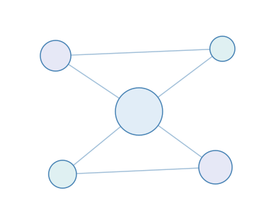

یادگیری کامپیوتر، شبکه و زیرساخت؛ ساده و گامبهگام
دورههای عملی علوم کامپیوتر، شبکههای کامپیوتری و زیرساخت فناوری اطلاعات، همراه با آزمایشگاه و پروژه واقعی.
مشاهده دورههاثبتنام
دورههای عملی علوم کامپیوتر، شبکههای کامپیوتری و زیرساخت فناوری اطلاعات، همراه با آزمایشگاه و پروژه واقعی.
مشاهده دورههاثبتنام